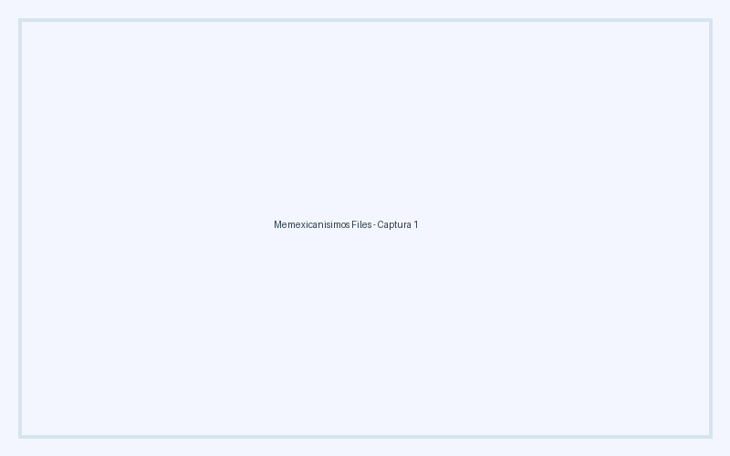
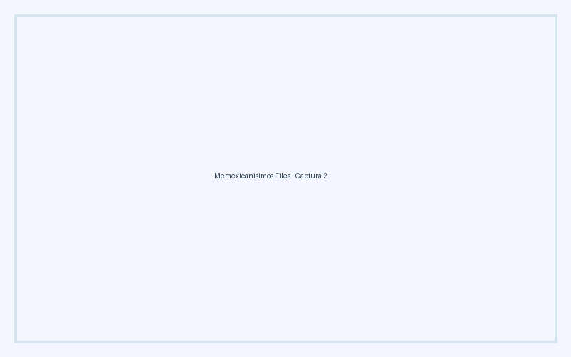

Memexicanisimos Files es la herramienta definitiva con asistente gráfico de 5 pasos para mantener tus directorios impecables, crear copias de seguridad incrementales y revertir cambios sin riesgo.

Solo descarga, descomprime y ejecuta inmediatamente (No requiere instalar Python ni dependencias):
¿Usas Windows o macOS? Puedes compilar fácilmente desde el código fuente siguiendo las instrucciones a continuación.
Diseñado especialmente para resolver problemas comunes de almacenamiento en la comunidad Linux y multiplataforma.
Detecta automáticamente la estructura de carpetas existente (por fecha, extensión o letra) para evitar carpetas duplicadas.
Revierte cualquier movimiento o copia fácilmente. Incluye modo simulación (Dry-Run) e historial de operaciones.
Usa placeholders inteligentes como {artista}, {album}, {titulo}, {ano} e incluye opción para limpiar metadatos sensibles.
Realiza backups incrementales de carpetas personales y clonación de discos a nivel de bloque con ddrescue y verificación de checksum MD5.
Conecta tu teléfono Android (MTP), cámara fotográfica (PTP) o pendrive y transfiere tus archivos organizadamente.
Interfaz moderna con paleta de colores suaves Tkinter y sistema de perfiles para guardar configuraciones frecuentes.
Conoce la interfaz gráfica clara y moderna de Memexicanisimos Files.

Si prefieres compilar desde el código fuente en tu sistema operativo:
git clone https://github.com/myinnervoid/Memexicanisimos-Files.git
cd Memexicanisimos-Files
build_windows.bat
git clone https://github.com/myinnervoid/Memexicanisimos-Files.git
cd Memexicanisimos-Files
chmod +x build_unix.sh && ./build_unix.sh
git clone https://github.com/myinnervoid/Memexicanisimos-Files.git
cd Memexicanisimos-Files
chmod +x build_unix.sh && ./build_unix.sh